Kernel smoothing¶
Kernel smoothing is a non parametric estimation method of the probability density function of a distribution.
In dimension 1, the kernel smoothed probability density function
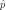
has the following expression, where K is the univariate kernel, n the sample size and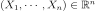
the univariate random sample with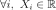
:(1)¶
The kernel K is a function satisfying  .
Usually K is chosen to be a unimodal probability density function that is symmetric about 0.
The parameter h is called the bandwidth.
.
Usually K is chosen to be a unimodal probability density function that is symmetric about 0.
The parameter h is called the bandwidth.
In dimension
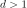
, the kernel may be defined as a product kernel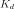
, as follows where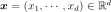
:
which leads to the kernel smoothed probability density function in dimension d,
where  is the d-variate random sample
which components are denoted
is the d-variate random sample
which components are denoted  :
:

Let’s note that the bandwidth is the vector  .
.
The quality of the approximation may be controlled by the AMISE (Asymptotic Mean Integrated Square error) criteria defined as:
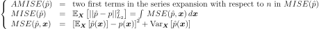
The quality of the estimation essentially depends on the value of the bandwidth h. The bandwidth that minimizes the AMISE criteria has the expression (given in dimension 1):
(2)¶![h_{AMISE}(K) = \displaystyle \left[ \frac{R(K)}{\mu_2(K)^2R(p^{(2)})}\right]^{\frac{1}{5}}n^{-\frac{1}{5}}](../../_images/math/16ce009d50c4972c7a8c5a4edd1a5ede59f808e3.svg)
where
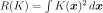
and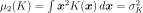
.If we note that
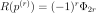
with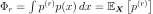
, then relation writes:(3)¶
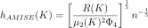
Several rules exist to evaluate the optimal bandwidth  :
all efforts are concentrated on the evaluation of the term
:
all efforts are concentrated on the evaluation of the term  . We give here the most usual rules:
. We give here the most usual rules:
the Silverman rule in dimension 1,
the plug-in bandwidth selection
the Scott rule in dimension d.
Silverman rule (dimension 1)¶
In the case where the density p is normal with standard deviation  ,
then the term can be exactly evaluated.
In that particular case, the optimal bandwidth of relation (3) with respect to the AMISE criteria writes as follows:
,
then the term can be exactly evaluated.
In that particular case, the optimal bandwidth of relation (3) with respect to the AMISE criteria writes as follows:
(4)¶
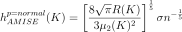
An estimator of
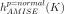
is obtained by replacing by its estimator  ,
evaluated from the sample
,
evaluated from the sample 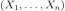
:(5)¶
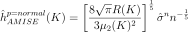
The Silverman rule consists in considering  of relation (5) even if the density p is not normal:
of relation (5) even if the density p is not normal:
(6)¶
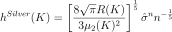
Relation (6) is empirical and gives good results when the density is not far from a normal one.
Plug-in bandwidth selection method (dimension 1)¶
Relation (3) requires the evaluation of the quantity .
As a general rule, we use the estimator  of
of  defined by:
defined by:
(7)¶
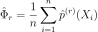
Deriving relation (1) leads to:
(8)¶
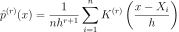
and then the estimator  is defined as:
is defined as:
(9)¶
We note that depends of the parameter h which can be
taken in order to minimize the AMSE (Asymptotic Mean Square Error) criteria
evaluated between and .
The optimal parameter h is:
(10)¶
Given that preliminary results, the solve-the-equation plug-in method proceeds as follows:
Relation (3) defines
as a function of we denote here as:(11)¶
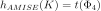
The term
is approximated by its estimator defined in
(9) evaluated with its optimal parameter 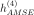
defined in (10):(12)¶
which leads to a relation of type:
(13)¶

Relations (3) and (12) lead to the new one:
(14)¶
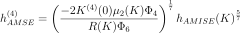
which rewrites:
(15)¶

Relation (14) depends on both terms
and
 which are evaluated with their estimators defined in (9)
respectively with their AMSE optimal parameters
which are evaluated with their estimators defined in (9)
respectively with their AMSE optimal parameters  and
and 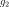
(see relation (10)). It leads to the expressions:(16)¶
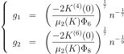
In order to evaluate
and  ,
we suppose that the density p is normal with a variance
,
we suppose that the density p is normal with a variance  which is approximated by the empirical variance of the sample, which leads to:
which is approximated by the empirical variance of the sample, which leads to:(17)¶

Then, to summarize, thanks to relations (11), (13), (15), (16) and (17), the optimal bandwidth is solution of the equation:
(18)¶
Scott rule (dimension d)¶
The Scott rule is a simplification of the Silverman rule generalized to the dimension d which is optimal when the density p is normal with independent components. In all the other cases, it gives an empirical rule that gives good result when the density p is not far from the normal one. For examples, the Scott bandwidth may appear too large when p presents several maximum.
The Silverman rule given in dimension 1 in relation (6) can be generalized in dimension d as follows: if we suppose that the density p is normal with independent components, in dimension d and that we use the normal kernel
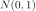
to estimate it, then the optimal bandwidth vector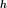
with respect to the AMISE criteria writes as follows:(19)¶
where  is the standard deviation of the i-th component of the sample
, and
is the standard deviation of the i-th component of the sample
, and
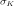
the standard deviation of the 1D kernel K.The Scott proposition is a simplification of the Silverman rule, based on the fact that the coefficient
 remains in
remains in ![[0.924, 1.059]](../../_images/math/a138709399e0328cdfaa91c9fd54236388e90d09.svg) when the dimension d varies.
Thus, Scott fixed it to 1:
when the dimension d varies.
Thus, Scott fixed it to 1:
(20)¶
which leads to the simplified expression:
(21)¶
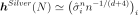
Furthermore, in the general case, we have from relation (ref{AMISE1}) :
(22)¶![\frac{h_{AMISE}(K_1)}{h_{AMISE}(K_2)}=\frac{\sigma_{K_2}}{\sigma_{K_1}}\left[\frac{\sigma_{K_1}R(K_1)}{\sigma_{K_2}R(K_2)}\right]^{1/5}](../../_images/math/080027cc357a31637bd4d58113f61113a78edaa0.svg)
Considering that  whatever the kernel K, relation (22) simplifies in:
whatever the kernel K, relation (22) simplifies in:
(23)¶
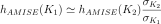
If we consider the normal kernel for , then relation (23) writes in a more general notation:
(24)¶
If  is evaluated with the Silverman rule, (24) rewrites:
is evaluated with the Silverman rule, (24) rewrites:
(25)¶
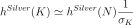
At last, from relation (21) and (25) applied in each direction i, we deduce the Scott rule:
(26)¶
Boundary treatment¶
In dimension 1, the boundary effects may be taken into account: the boundaries are automatically detected from the sample (with the min and max functions) and the kernel smoothed PDF is corrected in the boundary areas to remain within the boundaries, according to the mirroring technique:
the Scott bandwidth is evaluated from the sample: h
two sub-samples are extracted from the initial sample, containing all the points within the range
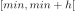
and![]max-h, max]](../../_images/math/9ffe4a9a66bb1ed3dac984e4ad9b224cb695fb55.svg) ,
,both sub-samples are transformed into their symmetric samples with respect their respective boundary: its results two samples within the range
![]min-h, min]](../../_images/math/5a995188b29a4d90cb55dc5c1813c655324d1bb9.svg) and
and  ,
,a kernel smoothed PDF is built from the new sample composed with the initial one and the two new ones, with the previous bandwidth h,
this last kernel smoothed PDF is truncated within the initial range
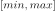
(conditional PDF).
API:
See the
KernelSmoothingfactory
Examples:
References:
Kernel smoothing, M.P. Wand and M.C. Jones, Chapman & Hall/CRC edition, ISNB 0-412-55270-1.
Multivariate Density Estimation, practice and Visualisation, Theory, David W. Scott, Wiley edition.